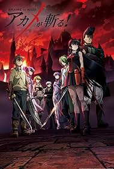

Akame ga Kill

SINOPSE
- Akame ga Kill! é um anime de ação, fantasia sombria e drama baseado no mangá de Takahiro (roteiro) e Tetsuya Tashiro (arte). A história segue Tatsumi, um jovem guerreiro que parte de sua aldeia pobre em busca de dinheiro para ajudar sua gente e salvar a sua aldeia da miséria. Ao chegar na capital imperial, Tatsumi logo descobre que a cidade é um lugar de profunda corrupção e injustiça, dominada por um império tirânico.